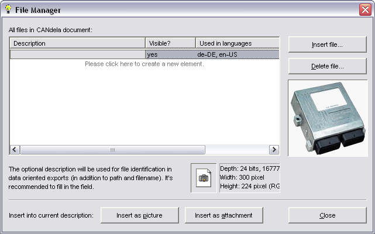

File Manager Dialog
All images and files that are contained in a document are managed in the file manager.
You can insert the same image and attached file several times at different objects and in different languages in the CANdela document.
The dialog provides a preview of images.
Click this button to insert the selected file as a picture in the edit control on which you opened the File Manager. The file will be displayed as a picture.
This button is available only if the selected file is one of the image formats known to CANdelaStudio (see below).
Used in data oriented exports to describe the file.
Lists in which languages of a multi-language CANdela document the file has been inserted.
Shows the path from which the file has been originally inserted into the CANdela document.
Lets you select a file from the file system and embed it into the CANdela document, i.e. into the list (pool) shown in File Manager.
In a second step, you can insert the file into a description (in an edit control).
Lets you delete the selected file(s) from the CANdela document:
You can only delete a file from a document if the file is used in the language in which you currently opened the document.
Example:
Click this button to insert the selected file as an attachment in the edit control on which you opened the File Manager. The attached file will be represented by a small icon in the text.
See the Description field in the Object Property Page "General" for how CANdelaStudio handles attachments in a description.
You can only insert images in the formats
If CANdelaStudio cannot display the image, it shows a red X instead.